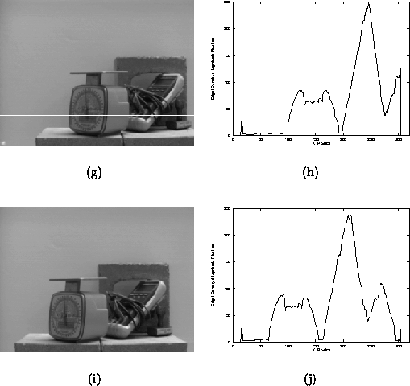

Let us now formulate a definition of an image-domain landmark, which will be the basic feature that we employ for localisation. The definition will be motivated by the observations we have noted in the previous section. Let be the output of an image operator, such as an edge detector, applied to some image I. If we define the density D of the output of E in the neighbourhood of as the sum of the output of E over each point in , normalised by the area of :
then a set of candidate landmarks C is defined as the set of sufficiently ``interesting'' local maxima of D:
where each candidate landmark represents a position in the image, and are the average and standard deviation D takes over the entire image, and t is a user-defined threshold. Simply stated, C is a set of local maxima of D that exceed a particular threshold.
Figure 3.3: Detected Landmarks in an
Image. The right image is the original, with the Canny-Deriche
edge map in the centre and the density function D on the right,
where darker intensity represents large values of D. In each
image, potential landmarks are drawn as squares.
Figure 3.3 shows the results obtained from running the landmark detector on an image obtained in our lab. From left to right, the images represent the original, edge map and density function D, with the potential landmarks superimposed as squares.
If we are to employ the density function D for feature extraction, it is worthwhile to consider the properties and behaviour of D under small changes in camera pose. Figure 3.4(a) shows a cross-section of the density function obtained from the image in Figure 3.4(b). The trajectory of the cross-section is marked by the solid line, which is also an epipole indicating the direction of translation. Now consider Figure 3.4(c), which is a cross-section of the image in Figure 3.4(d), obtained after a sideways translation of the camera by 5.0 cm. While both cross-sections are corrupted slightly by noise (caused by camera noise and other instabilities in the underlying edge-operator), the gross structure of both cross-sections is consistent. Furthermore, it is reasonable to select the larger local maxima as candidates for tracking, since they will be consistently localised to within a small neighbourhood.

Figure 3.4: A cross-section of the density function.
Figure 3.5 shows the results of an experiment conducted for the purposes of demonstrating the properties of the landmark detector. Each image is taken at 1.0cm intervals in a 3.0cm by 3.0cm grid. The detected landmark candidates are superimposed as bold squares. Note that some landmarks do not appear in all nine images, and others are perturbed slightly from their position in the centre image. It is clear, however, that the landmarks consistently mark image regions which may be useful for localisation. The semantic content of these image regions is unimportant, but how the appearance of the landmark varies under changes in pose will provide us with important information for localisation. Before they can be employed for localisation, however, the landmark candidates must be tracked and some may be removed. The next chapter will deal with these issues.
Figure 3.5: Output of the landmark
detector over a small region of pose-space.